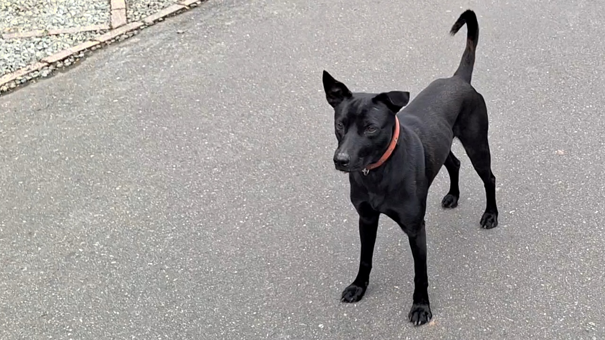
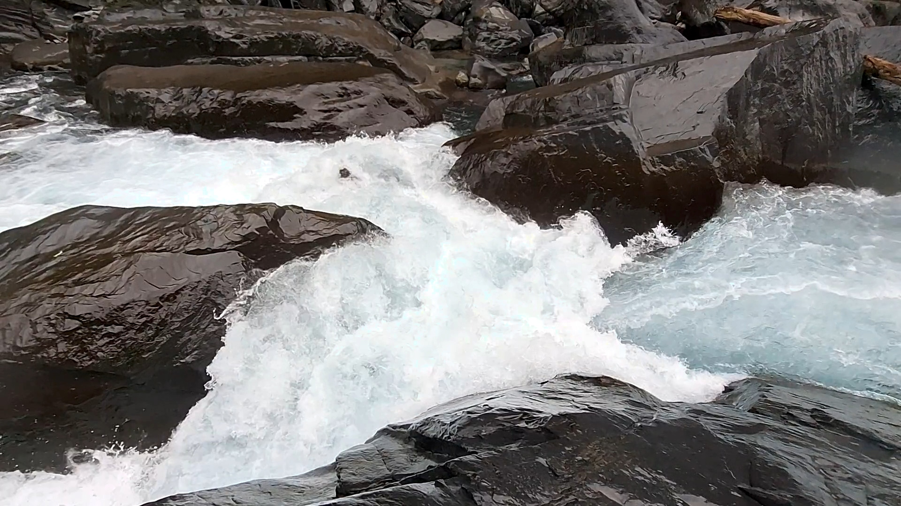

南勢溪 2025 元旦倒木穿越事故
從皮特爆頭到澳洲倒木
背景
- 南勢溪 Nanshi River
- 起點：大樓梯 (集水區165平方公里)
- 終點：內洞 (集水區207平方公里)
- 日期：2025-01-01（週三）
- 天氣：陰轉毛毛雨，氣溫12-14℃
- 水位：345.37m
- 地點：卡卡關後啟航，James’ Hole 起漂流，至皮特爆頭關（現在可以叫澳洲倒木了）
- 人員：James (freestyle) 、 立德 (riverplay) 、 TJ (freestyle) 、 博文 (river running)、 羊羹 (river play)

經過 | 倒木從卡卡中餐講起
自 10 月中旬探察 2024 汛期後水況，南勢溪沒再成行過。以為將維持低難度的地形好一陣子，未料這季節除了東北季風降水，竟有十月底的颱風康芮來襲，改變南勢溪許多，以全新面貌迎接2025。 要不是 James 提醒，早忘了這個罕見的晚秋颱風，況且台北當時降雨不多，讓我們忽略當時新北宜蘭交界的強降雨。 2024-10-31 當天福山一號橋站水位大漲至 354.64m ，原來是福山植物園單日達 412mm 的降水量貢獻，讓金字塔與第二崩塌高繞路上都有洪水痕跡。
以我們午餐休息的卡卡關來說，關卡前右岸有新崩塌，關卡收窄的右岸底下似有掏空的跡象，沒形成應有的反彈波，右岸後方回流會拉往大石底下的under-cut 拉去，且有沸騰的上升水流自回流區內湧出。勘查後，本有羊羹與大師兄要挑戰，羊羹吃完行動糧，得知其他人也要扛船後，與一早的豪氣形成強烈地對比，毫不猶豫退縮了，剩下大師兄身負重任。步行組依序扛船沿溪右繞過。我扛過關卡旁，上船橫渡至對岸，僅半船身長的岩石夾縫間，拉開防水裙，眼看下方澄淨的藍，沒有腳點，只得掏出繩環扣在船側，一手提繩一手握槳向兩側推撐上岸。攀上岩階拉起船並放妥後，前往關卡邊確保，此處拋繩戒護位置與拍攝角度較為理想。
剛走上搖滾區岩盤，右手掏出相機，見大師兄已於起跑區就位，立刻伸出左手，高舉拋繩袋，示意確保完成。手中螢幕上的花舟依既定路線，選擇沿主流偏左，這條容易失速的路線下航，途中為閃避中央障礙物，被左側回流減速，船頭遭側推向左邊，紅色花舟的小屁股逆時針甩了過去。划手不慌不忙地轉身，以後腦杓瞄準水流出口，倒車入庫，任水流倒蓋優雅地推出，雕蟲小技一般地翻船回正。不知原委者，會以為是設計過的動作吧？起身後，他臉上的水還沒流乾，轉頭回望了這個關卡，一淺淺滿足的微笑展開，慢條斯理地說「我先下去看」，旋即向下趕往主場 James’ Hole 勘查確保，見不到船屁股了。
立德剪輯 from Li-Te Chen on Youtube.
（也可看 James 剪輯的版本） （警告，影片不含精華畫面）
收好相機與拋繩，走回船邊，挪船至入水位置，陷入座艙看著對岸的立德、羊羹、TJ 上船，我也順手套好水裙，計畫待最後一人下水後，靠近說明一下後續的狀況。正在蓋上座艙蓋的立德，也許是動作大了點，連人帶船滑下水，不得已只能停入於稍下游小回流處裡。當他忙著套水裙時，羊羹也下水繞兩圈後向下划去，也許是覺得不好停吧？琢磨著 TJ 尚未下水，我想還等好一陣子吧？反正立德還在這，一聲「我先下去」便放心地往下游補位，漏掉告知下游情況的這回事，也未明確交接。
在這下行的短斜坡前段，我取左側水道超越的羊羹，切向主流並利用它加速，抬頭見到就位的大師兄示意下方無虞，自偏左卡入主流中央，向在右邊岸上的他喊問「可以嗎？」，只見他伸手作勢要我靠左貼著划。目光拉回騎乘著的主流，持續咬水加速，稍帶一點向左偏的慣性，抵達下降邊緣時，發現落差角度比預期地小，邊緣也向下延伸許多，內心一驚，趕緊止住下撈的左手槳，提於水面，等著時光流逝。屏息忍住，持續遞延要出手的相位，晚一點，再晚一點。終究左手仍是止不住撈水的趨勢，下槳時身體甚至向後拉了一下，所幸今天帶來具備自動 boof 的 Nomad，飛過溫馴的 James’ Hole 。 順手補一前進槳平衡，甩重心往左，撈左槳進左側回流石頭後面，是顆新立起的石頭。
向上看著不難處理的 James’ Hole ，等候羊羹來到。對岸石頭上的大師兄也拿起相機對準上游，並大聲提醒積極划槳，然而目光放回關卡入口時，出現眼簾的不是黃色Ripper ，而是向伊勇達多商借的藍色花舟。槳手雖然沒撈到最甜蜜點，也在今日溫馴水流推送下，直接穿越，只在最末被左側小浪推翻。
「再來一次」眼見一次翻滾失敗後我大喊
「我到旁邊了」靠到船上游端時喊著，想看 HoG 能不能省一次大救援。
槳交右手，重心左靠向花舟船底扶去時， 見船下游側一手扶上船底， TJ 已經脫出，緊接著頭盔帶人冒出水面。下游是一個右轉大彎，左邊有兩個回流區可以進，我們還在主流偏左，主流持續往左帶，看著左岸兩個較大的回流區，判斷能輕鬆的游進第一個大回流，那岸也比較好扛過後續的皮特爆頭關卡，口頭交代完，看他往左岸游去，便同步回頭去把右漂的船往左推。不知是引導不夠明確、水流太強還是帶槳游的效率問題，正當頂船越主流時， TJ 喊著「要往哪邊？」發現TJ錯過第一個回流，我答「左邊」！丟下船追趕過去，將剩一米時，遲疑地環顧四週再次尋找其他解方，以半公尺之差錯過第二個回流區入口，眼睜睜看著水流將人往倒木直直推送，這時即便靠上也無能為力，不得已只能大喊「盡量靠右」，祈禱能避開倒木下左側篩濾障礙物。
回頭向右岸橫渡到最右，掂量著十月來時已經沖開的正中央水道，面對未經勘查的盲航，選保守的貼右壁窄縫前進。專注力正集中於路線選擇時，左眼角瞄到，剛剛的水流輸送帶持續推送往倒木，而人也已貼上倒木，像壁虎一樣吸附在直徑80公分的倒木上蠕動掙扎。一！二！也不知道有沒有三？淺藍服裝落入水中。
回神到正前方，瞄準中右兩股水道間的分隔石，向右越過石頭，幸好下方只是白泡，窄縫較記憶中寬大，幸好沒有額外的障礙物。轉頭查看上游倒木下方，來回掃視搜索漂出的人。
一秒鐘、兩秒鐘、三秒鐘，人咧？還是一樣的水流聲，心涼了一下，不是因為天氣。
沙粒沒理人地在心中默數的沙漏持續飄揚撒下，目光左右掃視，一隻黃槳葉與黑柄的 Werner 槳，從倒木下向中間橫向彈射噴出，接回中央水道，在腦海刻劃下一條鮮明的軌跡。
「靠，人咧！」脈搏好像掉了一拍
餘光顯示，裝滿水的藍色小船沿右岸水路衝下，在白泡區翻騰繞行。雙目焦點仍然停留在中央水路出口上，在那條軌跡旁遊走搜尋。
四秒鐘、五秒鐘、六秒鐘，也不記得是多久，淺藍色身形沿著熟悉的軌跡，尾隨槳的人生道路，由倒木下向中央橫向發射，以標準的激流防衛姿勢噴出，是那種有離心力的甩入主流左轉，進入直行的水巷脫離險境，口鼻都在水面上，只求這段別有撞擊。
「有沒有撞到？」
「沒有！」穩定的語速表達
「超…恐…怖…的…」
「…………」
感謝元旦值班的土地公，雖然沒有暖陽陪伴，仍讓少跳兩下的心臟恢復了些。這段平緩的區域，水流往右岸推，下方也有兩個小回流，重大危機解除。
左邊視野中，方才浮現因高度覺醒而經意識忽略的槳，趁人漂來的空檔過去拉起。放下心中的忐忑，指引靠岸位置，並遞槳過去。
這時船也漂了出來，確認游泳者無礙入回流後，向前頂船進入回流區。
兩艘驚魂未定的藍船，倒水整裝，等著不知發生經過的二紅一黃下來。
要是早知道、我也不知道
- 或許，直接往右岸靠會很難游，但指引往右岸靠可以少一層風險，雖然這側會卡人的石頭也不少。再重複一次我會指引往哪邊游呢？
- 或許，當人員已錯過第二回流區衝向倒木時，救援者往左岸靠停，上攀到倒木旁最最差打算會不會更好？我不知道

原則回顧與❌️失誤應改善項目
- 安全優先順序：自己、團隊、待救者。 ❌️不該沒勘查皮特爆頭關盲下
- 救援順序：游泳者、槳、船。❌️不該在人還沒進回流前頂船
- 溝通：計劃要講出來，精確傳遞，別假設人人想法相同。
- ❌️游泳指示除了講方向外，要指明岸上明顯標的物，彌補游泳者視覺死角。並依照游泳情況給與回饋，角度、速度，並隨時重新評估策略。
- ❌️確實進行關卡與地形簡報，闡明地形概況與潛在風險，並讓划者與確保者有明確分工。未簡報與勘查時，領先者在前方直接下航，讓後續者誤解而未做停船準備。
- ❌️擔任現場任務，換手接替時需應明確交接（口頭或手勢）。
- ❌️需要隊員等待其他人的部份，應明確指示，或律定順序。（這點跟 John 划時有聊到 sweeper ；我們最近通常沒明確指名壓隊，較常用自發性攻守交替，看哪個位置缺人就移過去補，默契好時沒問題，但是沒明講總會有漏接時。）
大師兄：除了說出來之外，該溪流新手或不熟的隊友也要能主動提問了解區段難關的風險，相互確認再下航，任何人有疑問皆可立即吹哨或自己暫停讓大家靠邊口頭或手勢溝通。 - 關卡救援配置（大方向原則，雖然越多越好，但影響行進效率，也需依照地形特性調整）
- 高信心關卡：最少一岸上拋繩或水面戒護 （預備緊急狀況拉人而已）
- 可能脫出關：❌️最少一岸上拋繩（或水面戒護）及一水面戒護（能同時拉人與裝備回收）
- 明顯被吸關：最少一組岸上活餌、一水面戒護（能同時拉人與裝備回收）
- 隊伍組成，除個人航行能力外，需納入船型與新裝備考量。船型與不熟悉的裝備，除了改變隊員航行實力，也會改變班底救援能力與應變彈性。
- ❌️未考量新裝備熟悉度
心得
- 事故的發生總是一連串的失誤形成，我們能否系統性地在失誤鎖鏈中斷開其中一個環節，甚至打斷每個連接的環節，掩護其他失誤呢？而非這回靠運氣補位。
- 去年底玉峰溪與今年初南勢溪，很明顯存在航行管理溝通面的缺失，這部份應當較技術、經驗、默契，能更有效的改善點。
- 敘事末段，撿裝備的記憶或許混淆先後順序，若發現有誤，再另行更正。